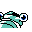

#229
Anorith
RockBug
This ancient bug used sharp claws to seize prey in warm, shallow seas long ago
Base stats Total 310
HP45
Attack95
Defense50
Speed75
Special45
Details
- Species
- Old Shrimp
- Height
- 2'04"
- Weight
- 27.5 lb
- Catch rate
- 45
- Base exp
- 119
- Growth
- Medium Fast
Level-up moves
LevelMoveType
StartScratchNormal
StartHardenNormal
Lv 9HardenNormal
Lv 15Metal ClawSteel
Lv 17Rock ThrowRock
Lv 18Bug BiteBug
Lv 22LungeBug
Lv 26SlashNormal
Lv 28AccelerockRock
Lv 30Rock SlideRock
Lv 48Stone EdgeRock
Evolution
Where to find
Not found in the wild — evolve, trade or catch it elsewhere.
TM / HM
TM03 Swords DanceTM06 ToxicTM08 Body SlamTM10 Double-EdgeTM12 Water GunTM16 Metal ClawTM28 DigTM31 MimicTM32 Double TeamTM44 RestTM48 Rock SlideTM50 SubstituteHM01 Cut